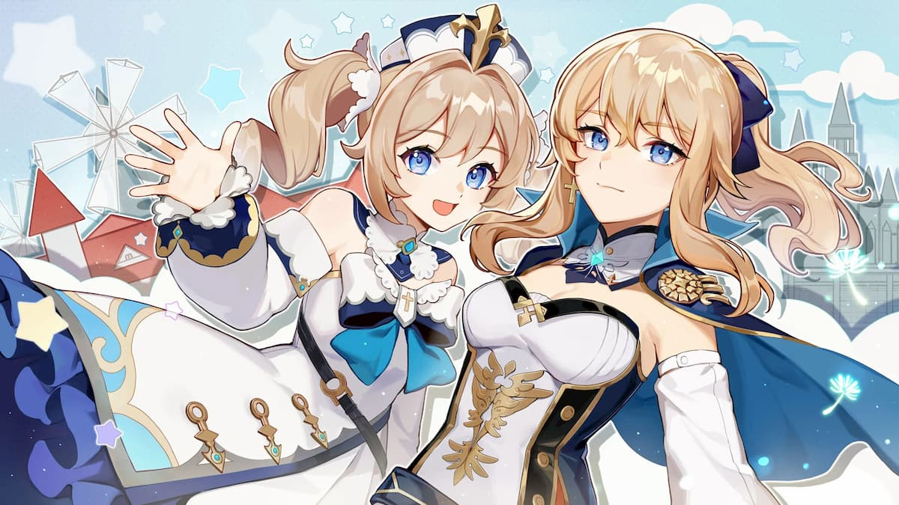

Two paragraphs that each have a different font
First paragraph.
Second paragraph.
Two pictures that were originally different sizes, resized to 50px by 50px

One more unique CSS command that was not discussed in the workshop
RED
Text that is centered on a photo
A photo with 20 pixel margins on each side
Text with a border that uses dotted lines
Master Level: rounded border image floated on the right side